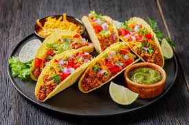
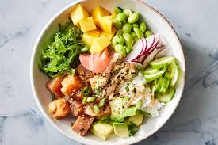
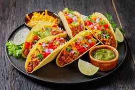
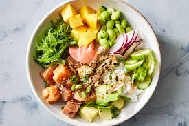

Sal y Perrea
Bem-vindo ao Sal y Perrea, onde cada refeição é uma experiência culinária que celebra os sabores autênticos da cozinha latino-americana. Localizado no coração da cidade, nosso restaurante oferece uma fusão de pratos tradicionais com um toque moderno, garantindo uma explosão de sabor em cada mordida. Dos deliciosos ceviches aos suculentos tacos, cada prato é cuidadosamente preparado com ingredientes frescos e paixão pela gastronomia. Venha se deliciar conosco e deixe-nos levá-lo a uma viagem gastronômica única pela América Latina.
Lançamentos
 



Ceviche
O ceviche, também conhecido como cebiche ou seviche, é um prato emblemático da culinária peruana que conquistou o paladar de pessoas ao redor do mundo. Com suas raízes profundamente fincadas nas tradições costeiras da América Latina, o ceviche é um verdadeiro deleite para os amantes de frutos do mar e sabores frescos. Este prato, caracterizado pelo peixe cru marinado em suco de limão ou lima, combina simplicidade e sofisticação de maneira única.
Feijoada
A feijoada é, sem dúvida, um dos pratos mais emblemáticos e celebrados da culinária brasileira. Conhecida por sua riqueza de sabores e tradição, a feijoada é muito mais do que apenas uma refeição; é um símbolo da cultura e da história do Brasil, apreciada em todo o país e amada por pessoas de todas as idades.
Tacos
Os tacos são um dos pratos mais icônicos e versáteis da culinária mexicana, apreciados por sua simplicidade, sabor e capacidade de reunir uma explosão de texturas e aromas em cada mordida. Desde suas origens humildes nas ruas do México até seu status de estrela global da gastronomia, os tacos representam uma verdadeira celebração da comida mexicana e de sua rica diversidade cultural.
Poke
O poke é um prato tradicional havaiano que vem ganhando popularidade mundial devido à sua frescura, sabor vibrante e versatilidade. Originalmente criado pelos pescadores havaianos como uma forma de aproveitar os peixes frescos capturados, o poke é agora um símbolo da cozinha havaiana contemporânea, que combina simplicidade, saúde e uma deliciosa variedade de sabores.